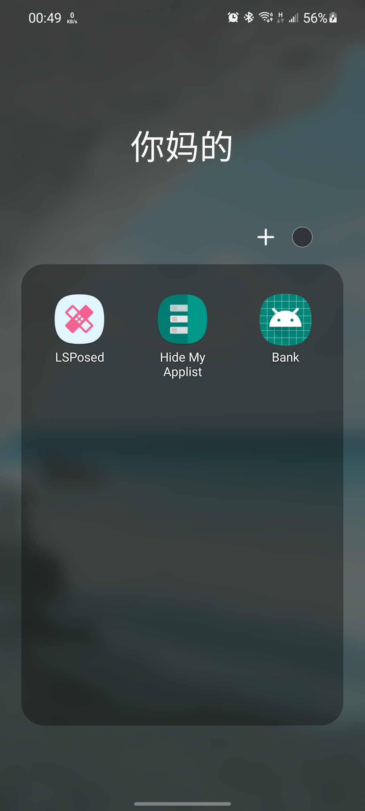

“猫鼠游戏” 流水账 链接到标题
自从给手机解锁 bootloader 并启用 root 权限之后，咱的心智负担就每况愈下：
不知道哪次什么 App 升级了新型 电信诈骗(root) 检测机制， 又得花时间排错（
App 更新检测机制；Root 框架进行修补；App 再次更新；框架再次修补……
这似乎成了一个难以破解的死循环。
这不，事情又来了……
钱钱 链接到标题
几周前，因为没钱吃饭，我打开了 Lloyds bank 的手机 app 查看余额，结果出现了一行大字：
Sorry, you can’t use this app as we’ve detected that your device has been kailbroken/rooted. You can still use our Mobile Banking or Internet Banking sites via your web browser.
寄了。
穷途末路，Google 上搜也没搜到结果。于是开始胡乱尝试：
1. 删了 Magisk 链接到标题
删掉 Magisk 后观测到 app 可以正常打开，但这根本不在我的可选解决方案内。我用了 MagiskHide Prop Config 换了设备
的 fingerprint（不然 Google Pay 用不了），如果整个 Magisk 卸载的话咱就更没法吃饭了。
2. 又把 Magisk 装回来 链接到标题
Banking App 可以没有，但是 root 和 Google Pay 不能。所以我又把 Magisk 装回来了。
在这期间就没怎么管它，直到今天。
3. Shamiko 链接到标题
经过与朋友的交谈，发现了 Shamiko。据说能 Hide more trace of Zygisk。不过因为是闭源的，那位朋友自己没尝试过， 只是在交谈中提及了一下。
结果配置了 Shamiko 后发现仍然 app 无法正常工作。
4. Island (Insular) 链接到标题
这玩意开了个沙盒，可以给指定的 Apps 构造独立的运行环境。可惜经过了几次尝试，没能成功启动。
5. 冻结重命名后的 Magisk App 链接到标题
XDA forum 里有推荐冻结住 Magisk Manager，但测试过后仍未果。
6. Hide My Applist 链接到标题
新的曙光出现了！
就在 Dec 12 （一周前），有人成功使用 Hide My Applist 修复了这个问题，那我也来试试。
发现仍然不行。
7. 仍然是 Hide My Applist 链接到标题
在仔细研究了它的 Hide My Applist 配置以后，我发现他用的是 blacklist 模式，也就是仅从 applist 里移除某些 apps， 咱闲来无事，就想：
我 tm 干脆给你整个白名单
于是把 Lloyds Bank 对应的规则改为了白名单模式，仅让其能检测到一些系统应用。
重启手机，发现竟然能打开了！
收尾 链接到标题
Lloyds Bank 在本月 8 号发了一个新版， 名曰 104.03。就是这个版本他们 “fixed some bugs and added security updates.” 导致 app 打不开。
至于为什么改成白名单就能正常工作……估计是还新增检测了一些别的应用吧？
不管怎么说，我终于能看到我的个位数余额了
把 Magisk Manager 重命名成了 Bank，记录此次事件：
